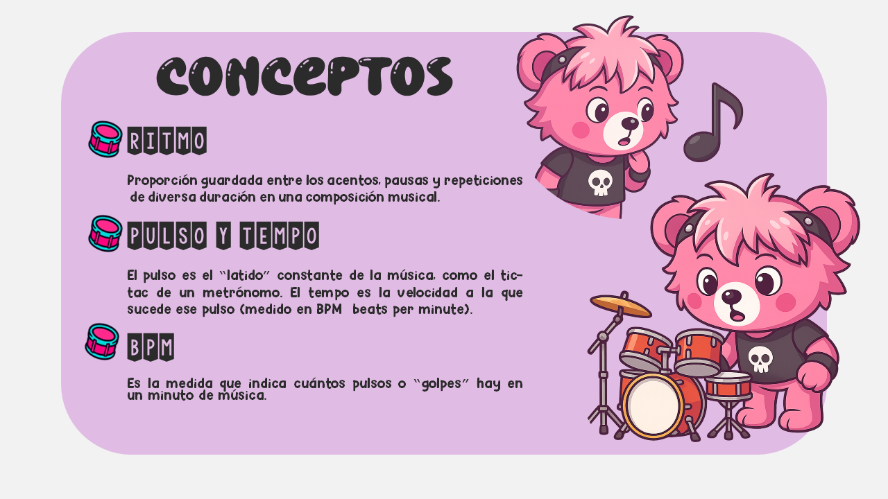

1. Escucha atentamente la música.
2. Mantente atento al ritmo.
3. Cuando veas una nota en la partitura presiona su tecla correspondiente, "A", "D" o "K".
4. El objetivo es superar una puntuación establecida para avanzar al siguiente nivel.
Algunos conceptos musicales para conocer:
